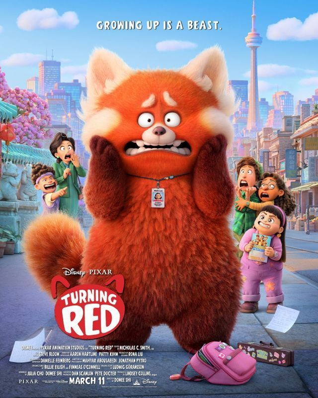

📸 Poster Film
🎧 Soundtrack (Contoh Audio)
🎥 Trailer (Contoh Video)
📝 Sinopsis & Info Film
Judul: Turning Red
Tahun Rilis: 2022
Durasi: 100 menit
Genre: Animasi, Komedi, Keluarga
Sinopsis: Mei Lee adalah gadis remaja berusia 13 tahun yang hidupnya mendadak berubah saat ia menyadari bahwa ketika emosinya memuncak, ia berubah menjadi panda merah raksasa. Film ini menggambarkan dengan lucu perjuangan remaja menghadapi perubahan dalam hidup, tekanan dari keluarga, dan menemukan jati diri.